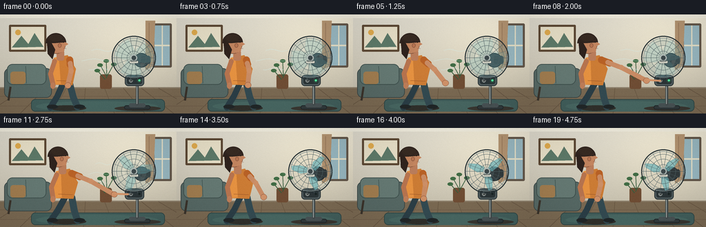
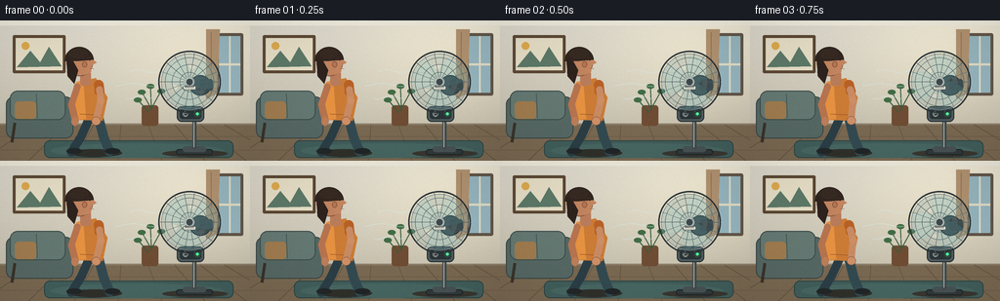
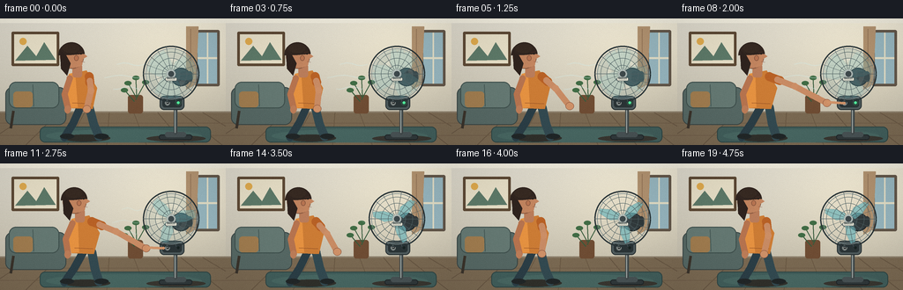

CODING AGENTS AS PIXEL WORLD MODELS
traex/GPT-5.6-Sol · motion_rationality_0048
点击播放 · 原生 RGB 像素
逐轮保存的候选
回放视频、检查图与代码变化。
每份候选均可单独播放。实际图片检查记录在下方工具轨迹中。
候选 01播放与检查图
点击播放 · 原生 RGB 像素


展开代码变化
--- 上一保存版本
+++ 本次保存版本
@@ -0,0 +1,267 @@
+from pathlib import Path
+import math
+import numpy as np
+from PIL import Image, ImageDraw, ImageFont, ImageFilter
+import artifact_io
+
+# PixelWorld text-to-video: hand-drawn, deterministic 2D scene.
+W, H, N, FPS = 256, 144, 20, 4.0
+S = 4
+rng = np.random.default_rng(48)
+
+def C(v): return int(round(v*S))
+def B(box): return tuple(C(x) for x in box)
+def P(points): return [(C(x), C(y)) for x,y in points]
+def ease(x):
+ x=max(0.0,min(1.0,x)); return x*x*(3-2*x)
+def mix(a,b,t): return a+(b-a)*t
+
+def font(size, bold=False):
+ f = '/usr/share/fonts/truetype/dejavu/DejaVuSans-Bold.ttf' if bold else '/usr/share/fonts/truetype/dejavu/DejaVuSans.ttf'
+ return ImageFont.truetype(f, C(size))
+
+# Integrated, physically plausible fan angle: steady rotation, then friction slows it.
+angles=[]; ang=16.0
+for i in range(N):
+ angles.append(ang)
+ if i < 9: speed=103.0
+ else:
+ # 103 -> 0 deg/frame with smooth ease-out over eight intervals
+ u=min(1.0,(i-8)/8.0)
+ speed=103.0*(1.0-u)**2
+ ang += speed
+final_angle = angles[17]
+for i in range(17,N): angles[i]=final_angle
+
+def line_round(d, xy, fill, width):
+ pts=P(xy); w=C(width)
+ d.line(pts, fill=fill, width=w, joint='curve')
+ r=w//2
+ for x,y in (pts[0],pts[-1]): d.ellipse((x-r,y-r,x+r,y+r),fill=fill)
+
+def gradient_background():
+ # warm, shaded interior wall
+ y=np.arange(H*S)[:,None]
+ x=np.arange(W*S)[None,:]
+ top=np.array([224,220,207.],float); bot=np.array([190,183,164.],float)
+ t=(y/(H*S-1))[:,:,None]
+ arr=np.broadcast_to(top*(1-t)+bot*t,(H*S,W*S,3)).copy()
+ glow=np.exp(-(((x-C(205))/C(85))**2 + ((y-C(30))/C(65))**2))[...,None]
+ arr += glow*np.array([20.,17.,9.])
+ return Image.fromarray(np.uint8(np.clip(arr,0,255)),'RGB')
+
+def draw_room(im, t):
+ d=ImageDraw.Draw(im)
+ # ceiling molding and floor
+ d.rectangle(B((0,0,256,5)),fill=(239,235,220))
+ d.line(P([(0,106),(256,106)]), fill=(126,112,92), width=C(1))
+ d.rectangle(B((0,107,256,144)),fill=(122,105,82))
+ # wooden floor boards / perspective seams
+ for x in [-20,29,76,121,166,210,252,292]:
+ d.line(P([(128+(x-128)*0.62,107),(x,144)]),fill=(101,84,65),width=C(.7))
+ for yv in [119,133]: d.line(P([(0,yv),(256,yv)]),fill=(111,93,72),width=C(.7))
+ # broad rug beneath characters
+ d.rounded_rectangle(B((45,123,239,141)),radius=C(6),fill=(65,94,91),outline=(47,70,69),width=C(1))
+ d.ellipse(B((52,126,229,141)),fill=(72,103,98))
+ # framed picture left rear
+ d.rounded_rectangle(B((13,15,67,54)),radius=C(1.5),fill=(92,72,52))
+ d.rectangle(B((16,18,64,51)),fill=(230,222,198))
+ d.polygon(P([(17,48),(31,31),(41,43),(50,27),(63,47)]),fill=(93,121,104))
+ d.ellipse(B((22,22,30,30)),fill=(221,169,78))
+ # couch, partially behind person
+ d.rounded_rectangle(B((6,78,75,121)),radius=C(8),fill=(86,104,100),outline=(58,70,69),width=C(1))
+ d.rounded_rectangle(B((10,72,67,102)),radius=C(8),fill=(101,121,115),outline=(61,78,75),width=C(1))
+ d.line(P([(37,75),(38,100)]),fill=(72,91,87),width=C(1))
+ d.rounded_rectangle(B((15,83,37,101)),radius=C(4),fill=(160,124,79))
+ d.line(P([(15,105),(12,125)]),fill=(58,51,43),width=C(3))
+ # slim window right rear, soft blue evening light
+ d.rounded_rectangle(B((221,13,249,77)),radius=C(2),fill=(98,86,73))
+ d.rectangle(B((224,16,246,74)),fill=(150,181,190))
+ d.rectangle(B((234.5,16,236,74)),fill=(224,220,197))
+ d.rectangle(B((224,44,246,46)),fill=(224,220,197))
+ # curtain
+ d.polygon(P([(211,9),(225,9),(222,75),(211,81)]),fill=(177,146,112))
+ d.line(P([(216,12),(216,75)]),fill=(151,120,91),width=C(1))
+ # plant between person and wall
+ d.rounded_rectangle(B((145,87,162,108)),radius=C(3),fill=(111,77,52))
+ for q in [(154,89,145,73),(154,92,165,72),(155,88,154,67),(152,94,141,81)]:
+ line_round(d,[(q[0],q[1]),(q[2],q[3])],(55,91,60),1)
+ d.ellipse(B((q[2]-4,q[3]-2,q[2]+4,q[3]+3)),fill=(65,108,69))
+
+
+def draw_airflow(im, frame):
+ # Air stream is visible only while fan is running; it fades as RPM falls.
+ if frame >= 16: return
+ if frame < 9: strength=1.0
+ else: strength=max(0,(16-frame)/7)
+ ov=Image.new('RGBA',im.size,(0,0,0,0)); d=ImageDraw.Draw(ov)
+ phase=(frame*5)%20
+ for k,(yy,length) in enumerate([(52,31),(66,42),(79,29)]):
+ x2=164-phase*.20-k*3; x1=x2-length*strength
+ alpha=int(90*strength)
+ # curved wind streaks
+ pts=[]
+ for j in range(16):
+ u=j/15; pts.append((mix(x2,x1,u), yy+math.sin(u*math.pi*2+k)*1.5))
+ d.line(P(pts), fill=(210,238,235,alpha), width=C(1.2))
+ # taper using small bright nose
+ d.ellipse(B((x1-1,pts[-1][1]-1,x1+1,pts[-1][1]+1)),fill=(220,244,241,alpha//2))
+ im.alpha_composite(ov)
+
+
+def fan_speed(frame):
+ if frame<9:return 1.0
+ return max(0.0,(1-(frame-8)/8))**2
+
+def draw_fan(im, frame):
+ d=ImageDraw.Draw(im)
+ # cast shadow and weighted base
+ d.ellipse(B((166,133,233,140)),fill=(57,55,49,85))
+ d.rounded_rectangle(B((180,132,218,138)),radius=C(3),fill=(49,57,59),outline=(31,38,40),width=C(1))
+ d.rounded_rectangle(B((187,129,211,135)),radius=C(3),fill=(72,82,84))
+ # post
+ d.rounded_rectangle(B((197,88,201,132)),radius=C(2),fill=(65,73,74))
+ d.rectangle(B((198,89,199,130)),fill=(155,164,161))
+ # control nacelle and physical power button
+ d.rounded_rectangle(B((181,88,209,104)),radius=C(5),fill=(79,91,93),outline=(39,48,50),width=C(1))
+ d.rounded_rectangle(B((184,91,206,101)),radius=C(3),fill=(43,52,54))
+ pressed = frame in (9,10)
+ by=96.0+(1.1 if pressed else 0)
+ d.ellipse(B((187,by-2.7,192.5,by+2.8)),fill=(24,29,30),outline=(157,165,162),width=C(.7))
+ # universal power symbol
+ d.arc(B((188.2,by-1.5,191.3,by+1.7)),15,330,fill=(219,225,220),width=C(.55))
+ d.line(P([(189.75,by-2),(189.75,by)]),fill=(219,225,220),width=C(.55))
+ on = frame < 10
+ d.ellipse(B((200.5,94.2,203.5,97.2)),fill=(85,255,163) if on else (24,35,34))
+ if on:
+ glow=Image.new('RGBA',im.size,(0,0,0,0)); gd=ImageDraw.Draw(glow)
+ gd.ellipse(B((198.5,92.2,205.5,99.2)),fill=(77,255,151,30)); im.alpha_composite(glow)
+ # rear motor housing
+ d.ellipse(B((194,56,216,77)),fill=(55,65,68),outline=(29,37,40),width=C(1.2))
+ d.rounded_rectangle(B((204,60,218,72)),radius=C(3),fill=(49,57,59))
+ cx,cy,r=194,63,32
+ # blade layer, behind safety grille
+ blades=Image.new('RGBA',im.size,(0,0,0,0)); bd=ImageDraw.Draw(blades)
+ sp=fan_speed(frame)
+ # soft rotary blur at speed; actual blades sharpen as motor loses speed
+ if sp>.28:
+ bd.ellipse(B((cx-r+4,cy-r+4,cx+r-4,cy+r-4)),fill=(104,151,157,int(20+32*sp)))
+ bd.ellipse(B((cx-18,cy-18,cx+18,cy+18)),outline=(193,220,217,int(27+25*sp)),width=C(5))
+ trail_count=4 if sp>.5 else (2 if sp>.16 else 1)
+ alpha=int(185/(trail_count**.65))
+ for trail in range(trail_count):
+ base=angles[frame]-trail*max(3,18*sp)
+ for k in range(3):
+ a=math.radians(base+k*120)
+ # broad curved-looking tapered fan paddle
+ def rot(px,py):
+ return (cx+px*math.cos(a)-py*math.sin(a),cy+px*math.sin(a)+py*math.cos(a))
+ poly=[rot(4,-3),rot(12,-8),rot(26,-7),rot(28,-2),rot(17,3),rot(6,4)]
+ bd.polygon(P(poly),fill=(112,183,188,alpha),outline=(72,126,133,min(220,alpha+20)))
+ bd.ellipse(B((cx-5,cy-5,cx+5,cy+5)),fill=(58,77,80,230),outline=(181,194,190,230),width=C(1))
+ im.alpha_composite(blades)
+ # safety cage: rings and radial wires are consistently stationary
+ cage=ImageDraw.Draw(im)
+ cage.ellipse(B((cx-r,cy-r,cx+r,cy+r)),fill=None,outline=(41,52,55),width=C(1.5))
+ cage.ellipse(B((cx-r+3,cy-r+3,cx+r-3,cy+r-3)),outline=(125,141,142),width=C(.7))
+ for rr in [10,18,25]:
+ cage.ellipse(B((cx-rr,cy-rr,cx+rr,cy+rr)),outline=(80,99,101),width=C(.55))
+ for deg in range(0,360,20):
+ a=math.radians(deg)
+ cage.line(P([(cx+5*math.cos(a),cy+5*math.sin(a)),(cx+r*math.cos(a),cy+r*math.sin(a))]),fill=(79,95,97),width=C(.48))
+ cage.ellipse(B((cx-4,cy-4,cx+4,cy+4)),fill=(62,73,75),outline=(188,196,192),width=C(.8))
+ # small brand badge
+ cage.rounded_rectangle(B((187.5,67,200.5,71)),radius=C(1.5),fill=(231,229,214),outline=(63,74,75),width=C(.5))
+ cage.text((C(189.3),C(67.1)),"BREEZE",font=font(2.25,True),fill=(55,67,68))
+
+
+def draw_person(im, frame):
+ # Reach starts after observing fan, press at f9-10, then hand smoothly returns.
+ if frame <=2: reach=0
+ elif frame<=8: reach=ease((frame-2)/6)
+ elif frame<=10: reach=1
+ elif frame<=17: reach=1-ease((frame-10)/7)
+ else: reach=0
+ lean=3.2*reach
+ d=ImageDraw.Draw(im)
+ # floor shadow
+ d.ellipse(B((69,132,125,140)),fill=(48,48,43,85))
+ # back leg
+ hip=(91+lean,101); knee=(83+lean*.3,119); foot=(73,135)
+ line_round(d,[hip,knee,foot],(43,62,70),9)
+ d.ellipse(B((68,131,84,137)),fill=(34,39,40))
+ # front leg
+ line_round(d,[(101+lean,101),(106+lean*.5,120),(112,134)],(51,74,81),10)
+ d.ellipse(B((107,131,123,137)),fill=(32,38,39))
+ # torso with mild forward lean
+ shoulder=(94+lean,62); waist=(96+lean*.35,102)
+ d.polygon(P([(78+lean,63),(98+lean,59),(110+lean,79),(105+lean*.4,103),(80+lean*.35,102),(75+lean*.4,79)]),fill=(204,124,53))
+ # shirt lighting and seams
+ d.polygon(P([(78+lean,63),(85+lean,61),(88+lean*.5,101),(80+lean*.35,102),(75+lean*.4,79)]),fill=(230,146,65))
+ d.line(P([(82+lean*.8,96),(104+lean*.4,97)]),fill=(150,83,39),width=C(.8))
+ # neck
+ d.rounded_rectangle(B((82+lean,52,93+lean,67)),radius=C(3),fill=(186,125,91))
+ # head side profile, facing right
+ hx=84+lean
+ d.ellipse(B((68+lean,30,95+lean,57)),fill=(193,132,95),outline=(121,77,55),width=C(.7))
+ # face front/nose silhouette
+ d.polygon(P([(92+lean,38),(99+lean,43),(94+lean,46),(93+lean,53),(86+lean,56)]),fill=(196,134,96))
+ # hair, shaped back and crown
+ d.pieslice(B((66+lean,27,96+lean,56)),178,355,fill=(50,38,32))
+ d.polygon(P([(68+lean,36),(69+lean,57),(76+lean,65),(80+lean,51),(75+lean,42)]),fill=(47,35,30))
+ d.ellipse(B((71+lean,29,90+lean,39)),fill=(55,42,34))
+ # ear, eye, brow; eye direction toward fan
+ d.ellipse(B((84+lean,42,89+lean,48)),fill=(184,117,82),outline=(110,69,51),width=C(.5))
+ d.ellipse(B((91+lean,39.5,92.6+lean,41.1)),fill=(34,30,27))
+ d.line(P([(88.5+lean,38.5),(93+lean,38)]),fill=(77,48,37),width=C(.65))
+ d.line(P([(92+lean,49),(96+lean,49.5)]),fill=(112,61,48),width=C(.6))
+ # non-operating arm hangs behind, providing readable silhouette
+ line_round(d,[(79+lean,68),(73+lean*.4,86),(77,103)],(183,116,79),7)
+ d.ellipse(B((73,99,80,108)),fill=(190,126,89))
+ # reaching arm: interpolate joint positions with anatomically stable two segments
+ sh=(101+lean,66)
+ elbow=(mix(103,132,reach)+lean*.35,mix(82,77,reach))
+ wrist=(mix(98,169,reach)+lean*.10,mix(103,96,reach))
+ # sleeve to upper arm
+ line_round(d,[sh,(mix(sh[0],elbow[0],.42),mix(sh[1],elbow[1],.42))],(184,97,38),10)
+ mid=(mix(sh[0],elbow[0],.32),mix(sh[1],elbow[1],.32))
+ line_round(d,[mid,elbow,wrist],(200,139,100),7)
+ # elbow soft highlight
+ d.ellipse(B((elbow[0]-3.7,elbow[1]-3.7,elbow[0]+3.7,elbow[1]+3.7)),fill=(204,143,103))
+ # hand and index finger. At full reach fingertip lands exactly on power button x189.7.
+ handx,handy=wrist
+ d.ellipse(B((handx-4.3,handy-4.2,handx+5,handy+4.4)),fill=(207,145,104),outline=(139,85,62),width=C(.55))
+ if reach>.72:
+ ext=(reach-.72)/.28
+ finger_end=(mix(handx+4,189.3,ext),mix(handy,96.2,ext))
+ line_round(d,[(handx+2,handy-1),finger_end],(210,148,106),3.0)
+ # visible fingertip contact glint only during button press
+ if frame in (9,10):
+ d.ellipse(B((188.3,95.1,190.5,97.3)),outline=(246,209,153),width=C(.7))
+
+
+def add_finish(im, frame):
+ # Ambient vignette and subtle deterministic paper/film texture.
+ arr=np.asarray(im.convert('RGB').resize((W,H),Image.Resampling.LANCZOS)).astype(np.float32)
+ yy,xx=np.mgrid[0:H,0:W]
+ vign=np.clip(((xx-W/2)/(W*.72))**2+((yy-H/2)/(H*.78))**2,0,1)[...,None]
+ arr *= 1-.10*vign
+ noise=rng.normal(0,0.9,(H,W,1))
+ arr += noise
+ return np.uint8(np.clip(arr,0,255))
+
+frames=[]
+for i in range(N):
+ base=gradient_background().convert('RGBA')
+ draw_room(base,i)
+ # airflow belongs behind both fan and person, reinforcing initial operation
+ draw_airflow(base,i)
+ # fan first, then person: fingertip can visibly overlap control on contact
+ draw_fan(base,i)
+ draw_person(base,i)
+ frames.append(add_finish(base,i))
+
+frames=np.stack(frames).astype(np.uint8)
+assert frames.shape==(20,144,256,3)
+artifact_io.save(frames, Path(__file__).resolve().parent)
+print('saved',frames.shape,frames.dtype)
候选 02播放与检查图
点击播放 · 原生 RGB 像素

展开代码变化
--- 上一保存版本
+++ 本次保存版本
@@ -8,6 +8,7 @@
W, H, N, FPS = 256, 144, 20, 4.0
S = 4
rng = np.random.default_rng(48)
+STATIC_NOISE = rng.normal(0, 0.9, (H, W, 1))
def C(v): return int(round(v*S))
def B(box): return tuple(C(x) for x in box)
@@ -48,7 +49,7 @@
arr=np.broadcast_to(top*(1-t)+bot*t,(H*S,W*S,3)).copy()
glow=np.exp(-(((x-C(205))/C(85))**2 + ((y-C(30))/C(65))**2))[...,None]
arr += glow*np.array([20.,17.,9.])
- return Image.fromarray(np.uint8(np.clip(arr,0,255)),'RGB')
+ return Image.fromarray(np.uint8(np.clip(arr,0,255)))
def draw_room(im, t):
d=ImageDraw.Draw(im)
@@ -246,8 +247,7 @@
yy,xx=np.mgrid[0:H,0:W]
vign=np.clip(((xx-W/2)/(W*.72))**2+((yy-H/2)/(H*.78))**2,0,1)[...,None]
arr *= 1-.10*vign
- noise=rng.normal(0,0.9,(H,W,1))
- arr += noise
+ arr += STATIC_NOISE
return np.uint8(np.clip(arr,0,255))
frames=[]
可观测工具轨迹
实际执行的命令与返回图片。
命令 1exit 0
/bin/bash -lc "cat prompt.txt && printf '\\n--- RULES ---\\n' && cat GENERATION_RULES.md && printf '\\n--- SPEC ---\\n' && cat task_spec.json"
命令 2exit 1
/bin/bash -lc "find . -maxdepth 2 -type f -printf '%p\\n' | sort && printf '\\nTools:\\n' && command -v ffmpeg && command -v python3"
命令 3exit 0
/bin/bash -lc "cat artifact_io.py; printf '\\nBins\\n'; command -v python3 || true; command -v ffmpeg || true; python3 - <<'PY'
import PIL,numpy
print('PIL',PIL.__version__,'numpy',numpy.__version__)
PY"命令 4exit 0
/bin/bash -lc "cat > generate.py <<'PY'
from pathlib import Path
import math
import numpy as np
from PIL import Image, ImageDraw, ImageFont, ImageFilter
import artifact_io
# PixelWorld text-to-video: hand-drawn, deterministic 2D scene.
W, H, N, FPS = 256, 144, 20, 4.0
S = 4
rng = np.random.default_rng(48)
def C(v): return int(round(v*S))
def B(box): return tuple(C(x) for x in box)
def P(points): return [(C(x), C(y)) for x,y in points]
def ease(x):
x=max(0.0,min(1.0,x)); return x*x*(3-2*x)
def mix(a,b,t): return a+(b-a)*t
def font(size, bold=False):
f = '/usr/share/fonts/truetype/dejavu/DejaVuSans-Bold.ttf' if bold else '/usr/share/fonts/truetype/dejavu/DejaVuSans.ttf'
return ImageFont.truetype(f, C(size))
# Integrated, physically plausible fan angle: steady rotation, then friction slows it.
angles=[]; ang=16.0
for i in range(N):
angles.append(ang)
if i < 9: speed=103.0
else:
# 103 -> 0 deg/frame with smooth ease-out over eight intervals
u=min(1.0,(i-8)/8.0)
speed=103.0*(1.0-u)**2
ang += speed
final_angle = angles[17]
for i in range(17,N): angles[i]=final_angle
def line_round(d, xy, fill, width):
pts=P(xy); w=C(width)
d.line(pts, fill=fill, width=w, joint='curve')
r=w//2
for x,y in (pts[0],pts[-1]): d.ellipse((x-r,y-r,x+r,y+r),fill=fill)
def gradient_background():
# warm, shaded interior wall
y=np.arange(H*S)[:,None]
x=np.arange(W*S)[None,:]
top=np.array([224,220,207.],float); bot=np.array([190,183,164.],float)
t=(y/(H*S-1))[:,:,None]
arr=np.broadcast_to(top*(1-t)+bot*t,(H*S,W*S,3)).copy()
glow=np.exp(-(((x-C(205))/C(85))**2 + ((y-C(30))/C(65))**2))[...,None]
arr += glow*np.array([20.,17.,9.])
return Image.fromarray(np.uint8(np.clip(arr,0,255)),'RGB')
def draw_room(im, t):
d=ImageDraw.Draw(im)
# ceiling molding and floor
d.rectangle(B((0,0,256,5)),fill=(239,235,220))
d.line(P([(0,106),(256,106)]), fill=(126,112,92), width=C(1))
d.rectangle(B((0,107,256,144)),fill=(122,105,82))
# wooden floor boards / perspective seams
for x in [-20,29,76,121,166,210,252,292]:
d.line(P([(128+(x-128)*0.62,107),(x,144)]),fill=(101,84,65),width=C(.7))
for yv in [119,133]: d.line(P([(0,yv),(256,yv)]),fill=(111,93,72),width=C(.7))
# broad rug beneath characters
d.rounded_rectangle(B((45,123,239,141)),radius=C(6),fill=(65,94,91),outline=(47,70,69),width=C(1))
d.ellipse(B((52,126,229,141)),fill=(72,103,98))
# framed picture left rear
d.rounded_rectangle(B((13,15,67,54)),radius=C(1.5),fill=(92,72,52))
d.rectangle(B((16,18,64,51)),fill=(230,222,198))
d.polygon(P([(17,48),(31,31),(41,43),(50,27),(63,47)]),fill=(93,121,104))
d.ellipse(B((22,22,30,30)),fill=(221,169,78))
# couch, partially behind person
d.rounded_rectangle(B((6,78,75,121)),radius=C(8),fill=(86,104,100),outline=(58,70,69),width=C(1))
d.rounded_rectangle(B((10,72,67,102)),radius=C(8),fill=(101,121,115),outline=(61,78,75),width=C(1))
d.line(P([(37,75),(38,100)]),fill=(72,91,87),width=C(1))
d.rounded_rectangle(B((15,83,37,101)),radius=C(4),fill=(160,124,79))
d.line(P([(15,105),(12,125)]),fill=(58,51,43),width=C(3))
# slim window right rear, soft blue evening light
d.rounded_rectangle(B((221,13,249,77)),radius=C(2),fill=(98,86,73))
d.rectangle(B((224,16,246,74)),fill=(150,181,190))
d.rectangle(B((234.5,16,236,74)),fill=(224,220,197))
d.rectangle(B((224,44,246,46)),fill=(224,220,197))
# curtain
d.polygon(P([(211,9),(225,9),(222,75),(211,81)]),fill=(177,146,112))
d.line(P([(216,12),(216,75)]),fill=(151,120,91),width=C(1))
# plant between person and wall
d.rounded_rectangle(B((145,87,162,108)),radius=C(3),fill=(111,77,52))
for q in [(154,89,145,73),(154,92,165,72),(155,88,154,67),(152,94,141,81)]:
line_round(d,[(q[0],q[1]),(q[2],q[3])],(55,91,60),1)
d.ellipse(B((q[2]-4,q[3]-2,q[2]+4,q[3]+3)),fill=(65,108,69))
def draw_airflow(im, frame):
# Air stream is visible only while fan is running; it fades as RPM falls.
if frame >= 16: return
if frame < 9: strength=1.0
else: strength=max(0,(16-frame)/7)
ov=Image.new('RGBA',im.size,(0,0,0,0)); d=ImageDraw.Draw(ov)
phase=(frame*5)%20
for k,(yy,length) in enumerate([(52,31),(66,42),(79,29)]):
x2=164-phase*.20-k*3; x1=x2-length*strength
alpha=int(90*strength)
# curved wind streaks
pts=[]
for j in range(16):
u=j/15; pts.append((mix(x2,x1,u), yy+math.sin(u*math.pi*2+k)*1.5))
d.line(P(pts), fill=(210,238,235,alpha), width=C(1.2))
# taper using small bright nose
d.ellipse(B((x1-1,pts[-1][1]-1,x1+1,pts[-1][1]+1)),fill=(220,244,241,alpha//2))
im.alpha_composite(ov)
def fan_speed(frame):
if frame<9:return 1.0
return max(0.0,(1-(frame-8)/8))**2
def draw_fan(im, frame):
d=ImageDraw.Draw(im)
# cast shadow and weighted base
d.ellipse(B((166,133,233,140)),fill=(57,55,49,85))
d.rounded_rectangle(B((180,132,218,138)),radius=C(3),fill=(49,57,59),outline=(31,38,40),width=C(1))
d.rounded_rectangle(B((187,129,211,135)),radius=C(3),fill=(72,82,84))
# post
d.rounded_rectangle(B((197,88,201,132)),radius=C(2),fill=(65,73,74))
d.rectangle(B((198,89,199,130)),fill=(155,164,161))
# control nacelle and physical power button
d.rounded_rectangle(B((181,88,209,104)),radius=C(5),fill=(79,91,93),outline=(39,48,50),width=C(1))
d.rounded_rectangle(B((184,91,206,101)),radius=C(3),fill=(43,52,54))
pressed = frame in (9,10)
by=96.0+(1.1 if pressed else 0)
d.ellipse(B((187,by-2.7,192.5,by+2.8)),fill=(24,29,30),outline=(157,165,162),width=C(.7))
# universal power symbol
d.arc(B((188.2,by-1.5,191.3,by+1.7)),15,330,fill=(219,225,220),width=C(.55))
d.line(P([(189.75,by-2),(189.75,by)]),fill=(219,225,220),width=C(.55))
on = frame < 10
d.ellipse(B((200.5,94.2,203.5,97.2)),fill=(85,255,163) if on else (24,35,34))
if on:
glow=Image.new('RGBA',im.size,(0,0,0,0)); gd=ImageDraw.Draw(glow)
gd.ellipse(B((198.5,92.2,205.5,99.2)),fill=(77,255,151,30)); im.alpha_composite(glow)
# rear motor housing
d.ellipse(B((194,56,216,77)),fill=(55,65,68),outline=(29,37,40),width=C(1.2))
d.rounded_rectangle(B((204,60,218,72)),radius=C(3),fill=(49,57,59))
cx,cy,r=194,63,32
# blade layer, behind safety grille
blades=Image.new('RGBA',im.size,(0,0,0,0)); bd=ImageDraw.Draw(blades)
sp=fan_speed(frame)
# soft rotary blur at speed; actual blades sharpen as motor loses speed
if sp>.28:
bd.ellipse(B((cx-r+4,cy-r+4,cx+r-4,cy+r-4)),fill=(104,151,157,int(20+32*sp)))
bd.ellipse(B((cx-18,cy-18,cx+18,cy+18)),outline=(193,220,217,int(27+25*sp)),width=C(5))
trail_count=4 if sp>.5 else (2 if sp>.16 else 1)
alpha=int(185/(trail_count**.65))
for trail in range(trail_count):
base=angles[frame]-trail*max(3,18*sp)
for k in range(3):
a=math.radians(base+k*120)
# broad curved-looking tapered fan paddle
def rot(px,py):
return (cx+px*math.cos(a)-py*math.sin(a),cy+px*math.sin(a)+py*math.cos(a))
poly=[rot(4,-3),rot(12,-8),rot(26,-7),rot(28,-2),rot(17,3),rot(6,4)]
bd.polygon(P(poly),fill=(112,183,188,alpha),outline=(72,126,133,min(220,alpha+20)))
bd.ellipse(B((cx-5,cy-5,cx+5,cy+5)),fill=(58,77,80,230),outline=(181,194,190,230),width=C(1))
im.alpha_composite(blades)
# safety cage: rings and radial wires are consistently stationary
cage=ImageDraw.Draw(im)
cage.ellipse(B((cx-r,cy-r,cx+r,cy+r)),fill=None,outline=(41,52,55),width=C(1.5))
cage.ellipse(B((cx-r+3,cy-r+3,cx+r-3,cy+r-3)),outline=(125,141,142),width=C(.7))
for rr in [10,18,25]:
cage.ellipse(B((cx-rr,cy-rr,cx+rr,cy+rr)),outline=(80,99,101),width=C(.55))
for deg in range(0,360,20):
a=math.radians(deg)
cage.line(P([(cx+5*math.cos(a),cy+5*math.sin(a)),(cx+r*math.cos(a),cy+r*math.sin(a))]),fill=(79,95,97),width=C(.48))
cage.ellipse(B((cx-4,cy-4,cx+4,cy+4)),fill=(62,73,75),outline=(188,196,192),width=C(.8))
# small brand badge
cage.rounded_rectangle(B((187.5,67,200.5,71)),radius=C(1.5),fill=(231,229,214),outline=(63,74,75),width=C(.5))
cage.text((C(189.3),C(67.1)),\"BREEZE\",font=font(2.25,True),fill=(55,67,68))
def draw_person(im, frame):
# Reach starts after observing fan, press at f9-10, then hand smoothly returns.
if frame <=2: reach=0
elif frame<=8: reach=ease((frame-2)/6)
elif frame<=10: reach=1
elif frame<=17: reach=1-ease((frame-10)/7)
else: reach=0
lean=3.2*reach
d=ImageDraw.Draw(im)
# floor shadow
d.ellipse(B((69,132,125,140)),fill=(48,48,43,85))
# back leg
hip=(91+lean,101); knee=(83+lean*.3,119); foot=(73,135)
line_round(d,[hip,knee,foot],(43,62,70),9)
d.ellipse(B((68,131,84,137)),fill=(34,39,40))
# front leg
line_round(d,[(101+lean,101),(106+lean*.5,120),(112,134)],(51,74,81),10)
d.ellipse(B((107,131,123,137)),fill=(32,38,39))
# torso with mild forward lean
shoulder=(94+lean,62); waist=(96+lean*.35,102)
d.polygon(P([(78+lean,63),(98+lean,59),(110+lean,79),(105+lean*.4,103),(80+lean*.35,102),(75+lean*.4,79)]),fill=(204,124,53))
# shirt lighting and seams
d.polygon(P([(78+lean,63),(85+lean,61),(88+lean*.5,101),(80+lean*.35,102),(75+lean*.4,79)]),fill=(230,146,65))
d.line(P([(82+lean*.8,96),(104+lean*.4,97)]),fill=(150,83,39),width=C(.8))
# neck
d.rounded_rectangle(B((82+lean,52,93+lean,67)),radius=C(3),fill=(186,125,91))
# head side profile, facing right
hx=84+lean
d.ellipse(B((68+lean,30,95+lean,57)),fill=(193,132,95),outline=(121,77,55),width=C(.7))
# face front/nose silhouette
d.polygon(P([(92+lean,38),(99+lean,43),(94+lean,46),(93+lean,53),(86+lean,56)]),fill=(196,134,96))
# hair, shaped back and crown
d.pieslice(B((66+lean,27,96+lean,56)),178,355,fill=(50,38,32))
d.polygon(P([(68+lean,36),(69+lean,57),(76+lean,65),(80+lean,51),(75+lean,42)]),fill=(47,35,30))
d.ellipse(B((71+lean,29,90+lean,39)),fill=(55,42,34))
# ear, eye, brow; eye direction toward fan
d.ellipse(B((84+lean,42,89+lean,48)),fill=(184,117,82),outline=(110,69,51),width=C(.5))
d.ellipse(B((91+lean,39.5,92.6+lean,41.1)),fill=(34,30,27))
d.line(P([(88.5+lean,38.5),(93+lean,38)]),fill=(77,48,37),width=C(.65))
d.line(P([(92+lean,49),(96+lean,49.5)]),fill=(112,61,48),width=C(.6))
# non-operating arm hangs behind, providing readable silhouette
line_round(d,[(79+lean,68),(73+lean*.4,86),(77,103)],(183,116,79),7)
d.ellipse(B((73,99,80,108)),fill=(190,126,89))
# reaching arm: interpolate joint positions with anatomically stable two segments
sh=(101+lean,66)
elbow=(mix(103,132,reach)+lean*.35,mix(82,77,reach))
wrist=(mix(98,169,reach)+lean*.10,mix(103,96,reach))
# sleeve to upper arm
line_round(d,[sh,(mix(sh[0],elbow[0],.42),mix(sh[1],elbow[1],.42))],(184,97,38),10)
mid=(mix(sh[0],elbow[0],.32),mix(sh[1],elbow[1],.32))
line_round(d,[mid,elbow,wrist],(200,139,100),7)
# elbow soft highlight
d.ellipse(B((elbow[0]-3.7,elbow[1]-3.7,elbow[0]+3.7,elbow[1]+3.7)),fill=(204,143,103))
# hand and index finger. At full reach fingertip lands exactly on power button x189.7.
handx,handy=wrist
d.ellipse(B((handx-4.3,handy-4.2,handx+5,handy+4.4)),fill=(207,145,104),outline=(139,85,62),width=C(.55))
if reach>.72:
ext=(reach-.72)/.28
finger_end=(mix(handx+4,189.3,ext),mix(handy,96.2,ext))
line_round(d,[(handx+2,handy-1),finger_end],(210,148,106),3.0)
# visible fingertip contact glint only during button press
if frame in (9,10):
d.ellipse(B((188.3,95.1,190.5,97.3)),outline=(246,209,153),width=C(.7))
def add_finish(im, frame):
# Ambient vignette and subtle deterministic paper/film texture.
arr=np.asarray(im.convert('RGB').resize((W,H),Image.Resampling.LANCZOS)).astype(np.float32)
yy,xx=np.mgrid[0:H,0:W]
vign=np.clip(((xx-W/2)/(W*.72))**2+((yy-H/2)/(H*.78))**2,0,1)[...,None]
arr *= 1-.10*vign
noise=rng.normal(0,0.9,(H,W,1))
arr += noise
return np.uint8(np.clip(arr,0,255))
frames=[]
for i in range(N):
base=gradient_background().convert('RGBA')
draw_room(base,i)
# airflow belongs behind both fan and person, reinforcing initial operation
draw_airflow(base,i)
# fan first, then person: fingertip can visibly overlap control on contact
draw_fan(base,i)
draw_person(base,i)
frames.append(add_finish(base,i))
frames=np.stack(frames).astype(np.uint8)
assert frames.shape==(20,144,256,3)
artifact_io.save(frames, Path(__file__).resolve().parent)
print('saved',frames.shape,frames.dtype)
PY
python3 generate.py"命令 5exit 0
/bin/bash -lc "python3 - <<'PY'
from pathlib import Path
import numpy as np
from PIL import Image
p=Path('.')
a=np.load('pixels.npz')['pixels']
print('pixels:',a.shape,a.dtype)
ims=[]
for i in range(20):
im=np.asarray(Image.open(f'frames/{i:02d}.png'))
assert im.shape==(144,256,3) and im.dtype==np.uint8
ims.append(im)
ims=np.stack(ims)
print('frames validated:',ims.shape,ims.dtype)
print('adjacent mean abs deltas:',[round(float(np.abs(ims[i].astype(int)-ims[i-1].astype(int)).mean()),2) for i in range(1,20)])
for f in ['generate.py','pixels.npz','index.html','inspection.png','transition_check.png']:
q=p/f; print(f,q.stat().st_size)
PY"命令 6exit 0
/bin/bash -lc "python3 generate.py && python3 - <<'PY'
import numpy as np
from PIL import Image
ims=np.stack([np.asarray(Image.open(f'frames/{i:02d}.png')) for i in range(20)])
assert ims.shape==(20,144,256,3) and ims.dtype==np.uint8
print('verified RGB',ims.shape,ims.dtype)
print('motion deltas', [round(float(np.abs(ims[i].astype(int)-ims[i-1].astype(int)).mean()),2) for i in range(1,20)])
print('final frame delta', np.abs(ims[19].astype(int)-ims[18].astype(int)).max())
PY
ls -lh pixels.npz index.html inspection.png transition_check.png generate.py"保存候选 2 份；完成命令 6 次；可验证图片返回 0 张。原始 API 响应与完整日志保留在本地。